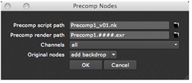

无论是要使用 Precomp 节点来加快渲染速度还是启用协作工作流，创建 Precomp 的过程都是相同的。
| 1。 | 选择要包含在单独的 precomp 脚本中的节点。如果选择组节点，则嵌套在其中的节点将复制到 precomp 脚本中。 |
| 2. | 选择 其他 > Precomp (或按 Ctrl / Cmd + 转变 + P 在节点图上)。 |
的 Precomp 节点 对话框打开。

注意:
如果在创建 Precomp 节点时没有选择任何节点，则不会显示 “Precomp 节点” 对话框，并且该节点保留为空。使用
文件
参数，然后可以浏览到现有脚本以加载到 Precomp 节点。
如果现有脚本中有几个写入节点，并且希望控制其中哪个用于 Precomp 节点的输出，则可以选择
其他
>
输出
在要使用的写入节点之后插入输出节点。
如果 Precomp 节点在脚本中找不到输出节点，它将查找写入节点并设置
输出节点
在 Precomp 中控制该节点的名称。的
输出节点
以后还可以使用字段来覆盖预压缩脚本中设置为输出节点的内容。要做到这一点，确保你检查
启用
。此复选框允许您在默认情况下选择的输出节点和在
输出节点
字段。
| 3. | 单击文件浏览器图标 旁边 Precomp 脚本路径 ,并浏览到要保存 precomp 的目录 。Nk 脚本。在目录路径后，输入 precomp 脚本的名称，例如 Precomp1_v01.nk 。默认情况下，precomp 脚本保存在主脚本旁边。如果主脚本尚未保存，则 precomp 脚本将保存在当前目录中。 |
| 4. | 单击文件浏览器图标 旁边 Precomp 渲染路径 ,并浏览到要保存预压缩节点的渲染输出的目录。在目录路径后，输入渲染图像的名称，例如 Precomp1 _ #.exr 。如果您愿意，您也可以在名称中使用版本号，例如 Precomp1_v01 _ #.exr . |
警告: 我们建议将图像渲染为 。Exr 因为这样 Nuke 可以将传入节点树的哈希值写入渲染文件。如果 precomp 脚本更改为哈希值不匹配, Nuke 然后可以通知您，您可以更新生成的图像。如果您使用的文件格式不是 。Exr ,您没有收到此通知，渲染的文件可能会变得过时。有关哈希值的更多信息，请参见 关于哈希值 .
| 5. | 从 渠道 下拉菜单中，选择要包含在预压缩节点的渲染输出中的通道。 |
如果以后需要调整此选择，可以通过在 precomp 中适当的写入节点 (默认情况下为 Write1) 上设置通道来执行此操作 。Nk 脚本。
| 6. | 从 原始节点 下拉菜单，选择: |
• 添加背景 在节点图中预先配置的节点后面创建一个背景。
• 删除 删除预配置节点。
• 没有变化 对预先配置的节点不做任何事情。
| 7. | 单击 好 . |
Nuke 将选定节点保存在 。Nk 指定脚本。此脚本还包括输入和输出节点、写入节点和当前项目设置。
在节点图中，选定的节点被替换为 Precomp 节点。 Nuke 打开 Precomp 节点的属性。
散列值是一个唯一的数字 (例如，b1c9c0aff2012a8)，从节点和连接到其输入的整个节点树中计算出来。节点的类和所有当前控制设置都有助于哈希值。
通过选择节点图中的节点并按键，可以在节点树中的任何点显示哈希值 我 。树中的不同点的哈希值可能不同。
创建 Precomp 节点时，precomp 。Nk 脚本从主脚本获取其项目设置。每当将 precomp 脚本加载到主脚本中时，也会使用主脚本的项目设置。因此，如果在的单独实例中打开 precomp 脚本 Nuke 并更改其项目设置，使它们不再与主脚本的设置匹配，当 precomp 脚本加载到主脚本中时，您的更改不会产生效果。如果要更改项目设置，应始终在主脚本而不是 precomp 脚本中进行更改。
|
|